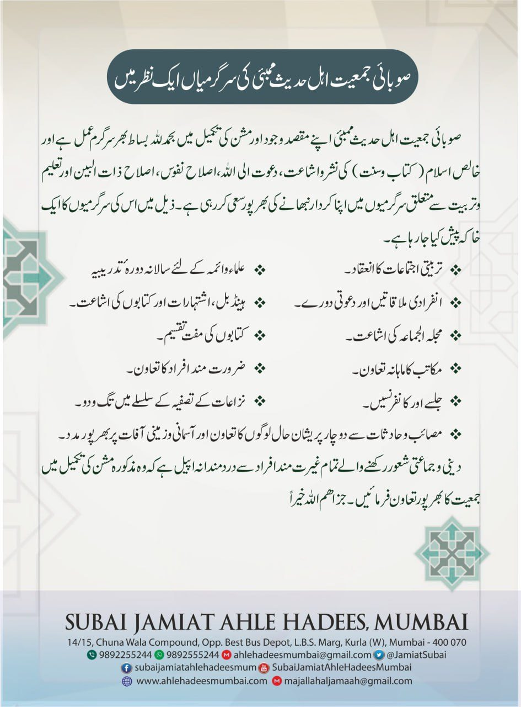

صوبائی جمعیت اہل حدیث کی اجمالی سرگرماں

حالیہ جماعتی سرگرمیاں و تنظیمی پروگرامز
ممبئی اور مضافات کے ائمہ و خطباء کے لیے دعوتی و اصلاحی موضوعات پر دو روزہ ورکشاپ۔
طلبہ و طالبات کے مابین حفظ قرآن، حدیث اور اسلامی تاریخ پر منعقدہ سالانہ مقابلہ۔
عوام الناس کے عقائد و اعمال کی درستگی اور سنتِ نبوی کے احیاء کے لیے خصوصی تربیتی سلسلے۔
ضرورت مند اور معذور افراد کے درمیان اشیائے خورونوش اور طبی امداد کی فراہمی۔
الحمدللہ رب العالمین والصلاۃ والسلام علی نبینا محمد وعلی آلہ وصحبہ أجمعین أمابعد:
وطن عزیز ہند میں جمعیت اہل حدیث کے قیام کے بنیادی مقاصد میں سے اہم ترین مقصد مختلف سرگرمیوں کے ذریعہ پورے ملک کے جماعتی احباب کو باہم مربوط رکھنا اور ان کی فلاح وبہبود کے کاموں میں سرگرم عمل رہنا ہے، پورے ملک میں جمعیت اہل حدیث کی ہزاروں شاخیں ہیں ان میں متعدد جمعیات حسن کارکردگی کی بنیاد پر معروف ومقبول ہیں، اور ان کے ذریعہ مختلف قسم کی دعوتی، تعلیمی، تربیتی، تنظیمی ورفاہی سرگرمیوں کا سلسلہ جاری رہتاہے جن کے اپنے اپنے حلقوں میں خوش آئند نتائج واثرات دیکھنے کوملتے ہیں۔
الحمدللہ صوبائی جمعیت اہل حدیث ممبئی کی بھی اپنی گوناگوں سرگرمیوں او ر ملک وملت اور جماعت کے لئے مفید ونفع بخش کاوشوں کے حوالہ سے عمدہ شناخت قائم ہے اور وہ جماعتی وغیر جماعتی حلقوں میں محتاج تعارف نہیں ہے۔
ذیل میں صوبائی جمعیت اہل حدیث ممبئی کے مختلف شعبوں اور ان کی کارکردگی کا ایک ہلکا سا خاکہ پیش کیا جارہا ہے، مقصد یہی ہے کہ احباب جماعت ان سرگرمیوں سے خود کو زیادہ سے زیادہ جوڑیں اور ان سے خود بھی مستفید ہوں اور دوسروں کے بھی افادے کا سبب بنیں واللہ الموفق وھو الہادی إلی سواء السبیل۔
صوبائی جمعیت اہل حدیث ممبئی شہر ممبئی ، تھانہ اور دیار کوکن میں جماعت اہل حدیث کی نمائندہ تنظیم ہے ۔ تنظیمی سرگرمیوں اور دعوتی جدوجہد کے حوالہ سے صوبائی جمعیت ملک بھر میں معروف ہے ۔ وسیع لائحہ عمل ، فعّال تنظیمی اور دعوتی شعبہ جات اور مختلف دعوتی صلاحیتوں میں مہارت رکھنے والے علماء اور دعاۃ کی مضبوط ٹیم کے حوالہ سے صوبائی جمعیت ملک بھرکے اداروں میں اپنی خصوصی شناخت رکھتی ہے ۔ اللہ کے فضل واحسان اور جماعت کے قیمتی تعاون کے ساتھ ہم اپنی وسعت بھر کوشش کررہے ہیں تاکہ جماعت کی تنظیم اور تنسیق اور دعوت کی ذمہ داریاں جمعیت کما حقہ ادا کرسکے ۔ ادھر لاک ڈاؤن اور اس کی بندشوں کی وجہ سے بہت سی سرگرمیاں موقوف تھیں لیکن اب بحمدللہ جمعیت اپنے کاز میں رواں دواں ہے۔ اللہ مزید توفیق بخشے۔ ذیل میں جمعیت کی سرگرمیوں کا مختصر سا خاکہ پیش کیا جارہا ہے ۔
❶ شعبۂ تنظیم و رابطہ عامہ:
صوبائی جمعیت اپنی ماتحت جمعیتوں کی کارکردگی کا استطاعت بھر جائزہ لیتی رہتی ہے ۔ یہ جمعیات صوبائی جمعیت کے ساتھ مستقل رابطہ میں رہتی ہیں ۔ صوبائی جمعیت مختلف ضروری اور مطلوبہ سرگرمیوں کی طرف ان کی توجہ مبذول کراتی رہتی ہے ۔
صوبائی جمعیت اہل حدیث ممبئی کا حلقۂ عمل ودائرۂ کار شہر ممبئی وتھانہ ودیار کوکن کے تمام اضلاع ہیں۔
◈ صوبائی جمعیت کے تحت ضلعی جمعیتوں کے ۱۱؍حلقے ہیں۔
◈ اور مقامی جمعیتوں کے ۱۰۰؍ سے زائد حلقے ہیں۔
◈ شعبۂ تنظیم کا کام مذکورہ تمام حلقوں میں ممبر سازی، اور انتخابی کارروائیوں کی تکمیل تک ان کی نگرانی اور تنظیمی سرگرمیوں پر نظر رکھنا ہے، ان کے باہمی مسائل کا تصفیہ اور تنظیمی مشکلات کا حل بھی اسی شعبے کی ذمے داری ہے اور الحمدللہ یہ شعبہ اپنی ذمہ داریوں کے متعلق پوری طرح حساس وفعال ہے۔
◈ اپنی ذیلی جمعیتوں کی تنظیمی تربیت کے لئے تنظیمی اجتماعات وکنونشنوں کا انعقاد بھی اس کی سرگرمیوں کا حصہ ہے۔
❷ شعبۂ دعوت:
الحمدللہ جماعت اہل حدیث کی دعوت خالص اسلام کی اور پورے اسلام کی دعوت ہے،جو رسول اللہ ﷺ نے صحابہ کرام رضوان اللہ علیہم اجمعین پر پیش کی تھی، اہل حدیث کی دعوت پر لیل ونہار کی گردش اور تاریخ کی بدلتی ہوئی کروٹوں اور صدیوں کی آلودگیوں کا کوئی اثر نہیں پڑا وہ جیسے کل تھی ویسے ہی آج بھی ہے، توحید وہی توحید ہے، منہج وہی منہج ہے، سرچشمہ وہی سرچشمہ ہے کچھ بھی تو نہیں بدلا ہے۔ اللہ کا شکر ہے کہ صوبائی جمعیت اہل حدیث ممبئی کی سرگرمیاں بھی اسی تاریخی تسلسل کا حصہ ہیں جو ہر طرح کی آمیزشوں اور ملاوٹوں سے پاک ہوکر خالص اسلام کے پیش کرنے کے لئے کی گئی ہیں۔
◈ صوبائی جمعیت کے متعدد دعاۃ ممبئی کی مختلف مساجد کی جانب سے دعوت پر دروس اور اجتماعات میں شرکت کرتے ہیں۔ موقع بموقع بیرون صوبہ بھی دعوتی پروگراموں میں شریک ہوتے ہیں۔
خطبات جمعہ دعوت وتبلیغ کا ایک موثر ذریعہ ہیں اس لئے صوبائی جمعیت ہر جمعہ ممبئی کی مختلف مساجد میں خطبہ جمعہ کی ترتیب کرتی ہے۔
◈ صوبائی جمعیت اہل حدیث ممبئی حلقے کی مختلف مساجد میں دروس، خطبات جمعہ وغیرہ کے لئے علاقہ ہی کے معتبر علماء کی خدمات بھی حاصل کرتی ہے۔
◈ اس شعبے کے تحت جمعیت کے مختلف حلقوں میں ماہانہ اجتماعات کا اہتمام کیا جاتاہے جس کے لئے مقامی علماء کے ساتھ بیرونی علماء کا تعاون بھی حاصل کیا جاتاہے۔
◈ صوبائی جمعیت کے ذمہ داران اپنی ذیلی جمعیات اور جماعت کے اجتماعات اور جلسوں میں شرکت کے ساتھ سرپرستی اور نگرانی بھی کرتے ہیں اور انہیں مطلوبہ رہنمائی اور ممکنہ تعاون پیش کرنے کی پوری کوشش کرتے ہیں۔
◈ متفرق اور مستقل دروس کا اہتمام بھی اس شعبے کے تحت مسلسل کیا جاتاہے، فی الحال جمعیت کے داعی ممبئی شہر کے کئی حلقوں میں مستقل درس دیتے ہیں۔ اور اپنے حلقوں کے تربیتی پروگراموں میں محاضرات بھی پیش کرتے ہیں۔
◈ جمعیت کے ذمہ داران ودعاۃ مختلف مساجد میں حسب طلب و بے طلب خطبۂ جمعہ کا بھی اہتمام پابندی کے ساتھ کرتے ہیں۔
◈ ائمہ مساجد کا مقام مسلم معاشرہ میں بہت بلند اور ان کی ذمہ داریاں انتہائی اہم ہیں جس کی وجہ سے صوبائی جمعیت ہر سال بڑے تزک و احتشام سے دورہ تدریبیہ کا انعقاد کرتی ہے۔ لاک ڈاؤن کی وجہ سے یہ سلسلہ منقطع تھا مگر اللہ کی مشیئت و توفیق سے امسال27؍ نومبر 2022ء بروز اتوار صبح نو بجے سے صلاۃ عشاء تک مسجد اہل حدیث کپاڑیا نگر کرلا میں منعقد ہونے جارہا ہے۔ یہ دورہ جس میں تقریبا 400؍ ائمہ ودعاۃ اور مہمانوں کی شرکت ہوگی ۔اور ملک و بیرون ملک کے کبار علماء، دکاترہ اور ماہرین علم وفن محاضرات پیش کریں گے۔ صوبائی جمعیت اپنی روایت کے مطابق شرکاء کے لئے قیمتی تحائف بھی پیش کرنے کی سعادت حاصل کرے گی۔إن شاء اللہ۔
◈ حج وغیرہ کی مناسبت سے خصوصی تربیتی اجتماعات کا اہتمام کیا جاتاہے۔
◈ جمعیت کے دعاۃ حسب طلب وضرورت دیگر صوبوں کے اجتماعات اور جلسوں میں بھی شرکت کرتے ہیں۔
◈ صوبائی جمعیت کی سالانہ دعوتی کانفرنس بھی پابندی کے ساتھ منعقد ہوتی ہے۔جس میں تمام حلقوں سے عوام کی بھاری اور بڑی تعداد شریک ہوتی ہے اور ملک کے بڑے اور نامور علماء وخطباء کے مواعظ وخطبات سے استفادہ کرتی ہے۔
❸ جماعت کے خلاف نامناسب سازشوں کا دفاع:
جماعت اہل حدیث کی قرآن وسنت اور منہج صحابہ پر مبنی خالص اسلام کی دعوت اور اس کے لئے کی جانے والی سنجیدہ واصولی کاوشوں اور نفع بخش تقریری وتحریری سرگرمیوں سے بعض مسلم حلقوں میں بے چینی پیدا ہونے لگتی ہے اور برسوں کے مسلکی جمود کا ٹوٹنا اور تقلید آباء کی روش سے لوگوں کا گریز انہیں ایک آنکھ نہیں بھاتاہے، اس لئے وہ جمعیت وجماعت کے خلاف سازش پر آمادہ ہوتے ہیں اور اسے بدنام کرنے کے لئے انتہائی نچلی سطح پر اتر آتے ہیں۔ ایسے موقعوں پر جمعیت ہمیشہ مسلک حق کی ترجمانی اور دفاع کے لئے آگے آتی ہے اور اللہ کی توفیق سے شریعت کی رہنمائی کے مطابق مذکورہ عناصر کے جواب میں مناسب اقدامات کرتی ہے اور تحریروں اور تقریروں کے ذریعہ حقائق کو منظر عام پر لاتی ہے اور اس طرح اللہ کے فضل سے ان کی چالیں اور نازیبا تدبیر یں بے اثر ہوجاتی ہیں۔ إلا ما شاء اللہ ولاقوۃ إلاباللہ.
❹ شعبہ تعلیم وتربیت:
اس شعبے کا مقصد طلباء میں تعلیمی رجحان کو بڑھانا اور ان کے اندر حصول علم کے لئے مسابقتی جذبہ پیدا کرنا ہے، نیز ان کی تعلیمی رہنمائی اور کمزور طلباء کا تعاون بھی منصوبوں کا حصہ ہے۔
◈ طلباء کے درمیان مذاکرۂ علمیہ کے عنوان سے مختلف میدانوں میں مسابقوں کا اہتمام جمعیت کی سرگرمیوں میں داخل ہے۔
◈ صوبائی جمعیت متعدد مکاتب میں مدرسین کی تنخواہوں کے مدمیں بھی تعاون کرتی ہے۔
❺ شعبۂ افتاء وتصفیہ معاملات:
یہ جمعیت کا کافی فعال شعبہ ہے، جمعیت کے مفتی صاحبان مختلف مسائل پر آنے والے استفتا کا جواب باقاعدگی سے دیتے ہیں، تحریری وزبانی دونوں طرح سے یہ سرگرمی جاری ہے۔
◈ طلاق وخلع جیسے مسائل میں بھی جمعیت کے ذمہ داران صلح صفائی اور نزاعات کے خاتمے کے لئے اپنی پوری کوشش صرف کرتے ہیں اور فریقین کے لئے اپنے وقت کا بڑا حصہ صرف کرتے ہیں اور ان کی خیر خواہی کا کوئی دقیقہ فروگزاشت نہیں کرتے ہیں۔
◈ دیگر امور میں بھی باہمی نزاعات کے خاتمے کے لئے جو لوگ جمعیت سے رجوع کرتے ہیں ذمہ داران ان کی طرف پوری توجہ دیتے ہیں۔
◈ جماعتی احباب یا علماء کے لئے اگر مشیئت الٰہی سے جماعتی یا ملی اعتبارسے کوئی مشکل پیش آتی ہے تو جمعیت امکانی تعاون کے لئے ہمیشہ تیار رہتی ہے اور ماضی میں کئی معاملات میں جمعیت نے اپنا کردار بخوبی نبھایا ہے اور دامے درمے قدمے سخنے ہر طرح کی کوششیں صرف کی گئی ہیں۔ وللہ الحمد.
جمعیت کے علماء ذاتی ملاقات ، فون اور سوشل میڈیا کے ذریعہ بھی عوام کی دینی رہنمائی کے فرائض انجام دیتے رہتے ہیں۔
❻ مختلف سیاسی اور دعوتی معاملات میں اپنےموقف کی :
پریس ریلیز وضاحت اور عوام کی رہنمائی کےلیے صوبائی جمعیت کے دفتر سے پریس ریلیز جاری ہوتی رہتی ہے ۔
❼ صوبائی جمعیت کا دفتر:
صوبائی جمعیت کا دفتر کرلابس ڈپو کے سامنے واقع ہے اور صبح دس بجے تا شب آٹھ بجے تک مختلف خدمات کے لئے پابندی سے کھلا رہتاہے۔
◈ دفتر میں شہر وبیرون شہر بلکہ بیرون صوبہ سے آنے والے مہمانوں کا استقبال کیا جاتاہے اور مختلف امور کے سلسلے میں ان کی رہنمائی اور تعاون کا کام انجام دیا جاتاہے۔
◈ دفتر میں متعدد کشادہ اور تمام ضرورتوں (کمپیوٹر وغیرہ) سے لیس کیبن موجود ہیں جن میں مختلف شعبوں کے افراد اپنی اپنی متعلقہ سرگرمیاں انجام دیتے ہیں۔
◈ امیر جمعیت وناظم جمعیت کے الگ الگ کیبن موجود ہیں۔
◈ ایک میٹنگ ہال بھی ہے۔
◈ حمامات اور ایک چھوٹا سا وضو خانہ بھی موجود ہے۔
◈ کمپیوٹر آپریٹروں کے لئے بھی متعدد کبین ہیں۔
◈ ابھی جلد ہی دفتر کی مرمت اور تجدید کا کام ہوا ہے جس کا صرفہ کافی ہے۔
❽ صوبائی جمعیت کی غیر منقولہ جائدادیں:
جوگیشوری ویسٹ ایس وی روڈ پر فیضان اپارٹمنٹ میں مسجد ومدرسہ کے لیے ایک مناسب کمرشیل ایریا صوبائی جمعیت کے نام رجسٹرڈ ہے ، وہاں جمعہ ، جماعت اور دیگر دینی سرگرمیاں بھی چل رہی ہیں الحمدللہ ابھی سال رواں میں بغل کا گالا بھی خرید کر مسجد کی مزید توسیع کردی گئی ہے جو احباب جماعت کے تعاون سے مکمل ہوا ہے اور اس طرح شہر ممبئی میں جمعیت کی ملکیت میں کل چار جائدادیں شامل ہوگئی ہیں:
1) صوبائی جمعیت اہل حدیث ممبئی کی موجودہ آفس، کرلا بس ڈپو کے سامنے، ایل بی ایس روڈ ، کرلا ویسٹ
2) صوبائی جمعیت اہل حدیث کی قدیم آفس، آشیانہ اپارٹمنٹ ، بالمقابل فوزیہ ہاسپٹل کرلا ویسٹ
3) جامع مسجد اہل حدیث کپاڈیہ نگرکرلا ویسٹ کے بغل میں ایک وسیع گالہ
4) مسجد اہل حدیث، ایس وی روڈ ، فیضان اپارٹمنٹ ، جوگیشوری ویسٹ
❾ لائبریری:
تحقیق وتالیف اور افتاء کا کام کرنے والے اہل علم کے مراجعہ ومطالعہ کے لئے دفتر میں ایک لائبریری بھی قائم ہے،جس میں عربی اور اردو زبان کی متعدد کتابیں مختلف موضوعات پر موجود ہیں۔
❿ شعبہ تحقیق وتالیف وترجمہ:
اس شعبے کے تحت مختلف اہم ترین موضوعات پر دسیوں کتابیں اب تک لکھی اور تیار کی جاچکی ہیں ، نیز مختلف قسم کے دعوتی پمفلٹ، فولڈر اور کتابچے وغیرہ بھی تیار کئے گئے ہیں اور مزید کتابوں کے ترجمے ، تالیف اور ترتیب کا کام جاری ہے۔
⓫ شعبۂ نشرواشاعت:
اس شعبے کے تحت مختلف کتابیں منظر پر آئی ہیں اور یہ کتابیں بڑی تعداد میں مفت تقسیم ہوئی ہیں ،اس شعبہ کے تحت شائع ہونے والی کتابوں کی ایک سرسری فہرست حسب ذیل ہے:
نام کتاب: صیام رمضان -مختصر احکام و مسائل (اردو)
تالیف: ابو عبد اللہ عنایت اللہ بن حفیظ اللہ سنابلی مدنی
صفحات : 132
لنک: https://urlis.net/pbhta4yh
اس کتاب میں مولف نے صیام کا معنی و مفہوم، فرضیت، رمضان اورصیام کے فضائل و برکات، مقاصد ومنافع، ارکان ، شروط، نواقض، صیام کے آداب، حالت صوم کے محرمات و ممنوعات اورمباحات، نیزمعذورین یعنی مریض ، مسافر، حیض و نفاس والی خواتین وغیرہ کے مسائل بیان کئے ہیں۔ اسی طرح قیام رمضان کا حکم، اس کی فضیلت، وقت ،مسنون رکعات، نیز اعتکاف کے احکام و مسائل، شب قدرکی فضیلت و علامات، عمومی طور پر ماہ رمضان کے خصوصی اعمال اسی طرح زکاۃ الفطر کے احکام ومسائل اور عید الفطر کے آداب و احکام اور منکرات وغیرہ کا مدلل ذکر کیا ہے۔
نام کتاب: تاریخ اہل حدیث -فرقۂ ناجیہ طائفہ اہل حدیث ہے! (اردو)
تالیف: علامہ احمد بن محمد دہلوی مدنی رحمہ اللہ
تحقیق: علی بن حسن بن علی بن عبد الحمید حلبی اثری حفظہ اللہ
ترجمہ: ابو عبد اللہ عنایت اللہ بن حفیظ اللہ سنابلی مدنی
صفحات: 170
لنک: bit.ly/3YXNnJ7
تاریخ اہل حدیث کے موضوع پر یہ ایک جامع اور نہایت اہم کتاب ہے۔اس کتاب میں مولف رحمہ اللہ نے تاریخی تسلسل کے ساتھ بلا انقطاع عہد رسول ﷺ سے لیکر آج تک اہل الحدیث کی تاریخ بیان فرمائی ہے، نیز مستند اور ٹھوس دلائل اور حوالوں سے یہ ثابت کیاہے کہ حدیث رسول ﷺ میں ’’طائفہ منصورہ ‘‘ اور ’’فرقۂ ناجیہ ‘‘سے مراد اہل الحدیث ہیں، جونبوی پیشین گوئی کے مطابق اپنے آغاز سے لیکر آج تک اور قیامت تک حق پربالادستانہ قائم اور گامزن رہیں گے۔ اسی طرح اہل الحدیث کے منہج کی صحت وحقانیت پر روشن دلائل پیش کئے ہیں ، ساتھ ہی ائمہ اربعہ کے احترام کا وجوب، مروجہ مذاہب کا تاریخی جائزہ، مقلدین کے بے ثباتی، اتباع اور تقلید کے مابین فرق،اور بدعتیوں کی نشانیوں کی خوب وضاحت فرمائی ہے۔ نادانی اور عصبیت کی بنیادپراہل الحدیث کے خلاف بدزبانیاں کرنے والوں کے لئے یہ کتاب کسی اکسیر سے کم نہیں۔
نام کتاب: مسئلۂ تکفیر -اہل سنت اور گمراہ فرقوں کے مابین ایک جائزہ (اردو)
تالیف: فضیلۃ الشیخ ڈاکٹر سعید بن علی بن وہف القحطانی حفظہ اللہ
ترجمہ: ابو عبد اللہ عنایت اللہ بن حفیظ اللہ سنابلی مدنی
صفحات: 217
لنک: bit.ly/3YJySIp
شریعت اسلامیہ میں کسی مسلمان کو کافر قرار دینا ایک جرم عظیم ہے ،یہ کتاب تکفیر کے عنوان پر نہایت اہم کتاب ہے، اس میں مولف حفظہ اللہ نے کتاب وسنت اور سیرت سلف کی روشنی میں اس فتنہ کا نہایت علمی و اصولی جائزہ لیاہے اور افراط و تفریط کے مابین اہل سنت و جماعت کا کھرا اور معتدل موقف واضح کرنے کے لئے مدلل طور پر موضوع کے تمام جوانب کا احاطہ کیا ہے، مثلاً تکفیر کے اصول‘ ضوابط اور موانع،تکفیر کی خطرناکی، تکفیر کے باب میں اہل سنت وجماعت کا موقف اور ان کے دلائل،کفر کی قسمیں اور خطرناک تکفیری امور، تکفیر کے باب میں لوگوں کے مواقف اور ان کا جائزہ اور حق کی وضاحت وغیرہ۔ الغرض تکفیر کی حقیقت، اسباب اور سد باب پریہ ایک نہایت جامع کتاب ہے ، اس موضوع پر اردو میں اس سے بہتر کتاب موجود نہیںہے۔
نام کتاب: تقلید کا حکم کتاب وسنت کی روشنی میں (اردو)
تالیف: ڈاکٹر وصی اللہ محمد عباس بستوی حفظہ اللہ (مدرس و مفتی مسجد حرام، وپروفیسر ام القریٰ یونیورسٹی مکہ)
صفحات: 176
لنک: bit.ly/3QKLPjg
تقلید کی حقیقت کے سلسلہ میں یہ ایک گرانقدر مرجعی کتاب ہے، جس میں مولف حفظہ اللہ نے علمی و اصولی لب و لہجہ میں تقلید کا معنیٰ و مفہوم، تقلید و اتباع کے مابین فرق، ائمہ کرام کا اپنی اوردیگر لوگوں کی تقلید سے منع کرنا ، عہد سلف میں تقلید کا فقدان،کتاب و سنت کی روشنی میں مسلک و مذہب کے التزام کا عدم جواز، مسلکی تعصب، ائمہ کے احترام کا مفہوم اور اس کے حدود، مذہبی تعصب کے اسباب و علاج، تقلید و تعصب کے نقصانات،مذاہب و مسالک کا التزام کتاب و سنت سے بے نیاز نہیں کرسکتا، وغیرہ پہلوؤں کی مدلل وضاحت فرمائی اور اخیر میں تعلیم وتربیت کے لئے صحیح اور حقیقی فقہ کی رہنمائی فرمائی ہے۔
نام کتاب: داڑھی- اسلامی فریضہ اور مرد مومن کا شعار (اردو)
تالیف: ابو عبد اللہ عنایت اللہ بن حفیظ اللہ سنابلی مدنی
صفحات: 184
لنک: https://urlis.net/xciusvkn
مرد مومن کی مردانگی اور قوت و شہامت کی جلی اور ظاہری علامت ’’داڑھی‘‘ کےسلسلہ میں کتاب و سنت اور سیرت سلف کے دلائل نیزاہل علم کے فرمودات سے مزین یہ ایک جامع کتاب ہے ، جس میں مولف موصوف نے بڑی عرق ریزی سے داڑھی کا معنیٰ و مفہوم،کتاب وسنت ،سیرت سلف اور اہل علم کے اقوال کی روشنی میں اس کی فرضیت‘ مونڈنے اور کاٹنے کترنے کی حرمت اوردیگر قباحتیں بیان کی ہیں،نیز داڑھی سےمتعلق شبہات ، اشکالات اور غلط فہمیوں کا ازالہ کیا ہے، اسی طرح داڑھی سے متعلق مرجوح مواقف کا جائزہ لیاہے ،نیز اہل علم کے مستند فتاوے نقل کئے ہیں،نیز داڑھی اور مونچھ وغیرہ سے متعلق بعض دیگر احکام بیان کئے ہیں اسی طرح داڑھی سے متعلق بعض ضعیف و موضوع روایات کا ذکر بھی کیاہے۔داڑھی سے متعلق اردو زبان میں یہ ایک نہایت مدلل، مستند اور مرجعی کتاب ہے۔
نام کتاب: جماعت اہل حدیث پر الزامات کا جائزہ (اردو)
تالیف: برادر ابو زید ضمیر
صفحات: 72
لنک: bit.ly/3QMOgSK
جماعت اہل حدیث پر ہونے والے الزامات کے ازالہ کے بارے میں یہ ایک اہم اور گرانقدر رسالہ ہے، جس میں مولف موصوف نے مخالفین کے دس مشہور الزامات کا جائزہ لیا ہے اور کتاب و سنت اور جماعت اہل حدیث کے حقیقی منہج و عقیدہ کی روشنی میں ان کا ازالہ فرمایاہے، مثلاً جماعت اہل حدیث انگریزوں کا ایجاد کردہ ایک نیا فرقہ ہے، یا وہ رسول اللہ ، صحابہ و تابعین، اولیاء، علماء بالخصوص ائمہ اربعہ وغیرہم کی شانوں میں گستاخیاں کرتے ہیں ، ان کا مقام و مرتبہ تسلیم نہیں کرتے، یا اجماع کے منکر ہیں، یا یہ کہ وہ امت میں تفرقہ پیدا کرتے ہیں، اسی طرح وہ دہشت گردی کی تعلیم دیتے ہیں اورمسلمانوں کی تکفیر کرتے ہیںوغیرہ ۔ یہ اپنے موضوع پر مختصر مگر ایک جامع رسالہ ہے۔
نام کتاب: قرآن کی شیتل چھایا (ہندی)
تالیف: ڈاکٹر محمد ضیاء الرحمن اعظمی حفظہ اللہ
صفحات: 160
لنک: https://urlis.net/9sftov6n
دعوت و تربیت کے باب میں ہندی زبان میں یہ ایک نہایت انوکھی کتاب ہے جس میں مولف حفظہ اللہ نے قرآن کریم کی آیات،سیرت رسول ﷺ اور اسی طرح سلف صالحین کی زندگیوں کی روشنی میںتوحید باری تعالیٰ، یوم آخرت اور اللہ واحد کی عبادت و بندگی کے علاوہ اسلام کی صالح تعلیمات، سچائی، امن و سلامتی، حق وانصاف،سماج و سوسائٹی میں عمدہ اخلاق و کرداراوربندوں کے حقوق وغیرہ کی وضاحت فرمائی ہے۔یہ کتاب غیر مسلموں اور اسی طرح دعوتی میدان میں کام کرنے والوں کے لئے یکساں مفید ہے۔
نام کتاب: حج و عمرہ ، کتاب و سنت کی روشنی میں (اردو)
تالیف: فضیلۃ الشیخ مختار احمد مدنی
صفحات: 132
لنک: https://urlis.net/e4wmrmrr
حج و عمرہ اور زیارت مسجد نبوی کے احکام و مسائل سے متعلق یہ ایک اہم اور جامع کتاب ہے، جس میں مولف موصوف نے بڑ ی محنت سے عمرہ اور حج بیت اللہ کے احکام و آداب ، فضائل ، شرائط و ضوابط ، احرام، مواقیت، مشاعر: منیٰ، مزدلفہ، عرفات ، رمی جمرات ، مکہ، طواف ، سعی وغیرہ میںمناسک کی تفصیلات بیان کی ہیں، اسی طرح زیارت مسجد نبوی کے آداب و احکام بھی بیان کیا ہے، اس کتاب میں خاص بات یہ ہے کہ اس میں مناسک حج اور مشاعر وغیرہ میں حج و عمرہ اور زیارت مسجد نبوی کے دوران عازمین سے عموماً جو غلطیاں سرزد ہوجاتی ہیں خصوصی طور پر ان کی نشاندہی کی گئی ہے، تاکہ عازمین ان کا خصوصی خیال رکھیں۔یہ اپنے موضوع پر ایک عمدہ کتاب ہے۔
نام کتاب: امام حرم ڈاکٹر سعود الشریم کا ایک گرانقدر خطاب(اردو)
خطاب: امام حرم ڈاکٹر سعودبن ابراہیم الشریم حفظہ اللہ
ترجمہ وتعلیق: فضیلۃ الشیخ عبد المعید مدنی حفظہ اللہ
صفحات: 24
لنک: https://tinyurl.com/yef9uf2w
یہ ایک اہم مختصر رسالہ ہے جو یکم نومبر ۲۰۱۰ء کو امام حرم شیخ سعود بن ابراہیم الشریم حفظہ اللہ کی ممبئی آمد پرصوبائی جمعیت اہل حدیث ممبئی کے زیر اہتمام جامع مسجد اہل حدیث مومن پورہ ممبئی میں امام موصوف کے گرانقدر خطاب کااردو ترجمہ ہے، اس خطاب میں امام موصوف نے اہل حدیثان ہند سے اپنی دیرینہ اخوت، محبت ، بھائی چارگی اور والہانہ عقیدت کا اظہار فرمایا ہے، اور ہندوستان آمد پر سب سے پہلے اُن سے اپنی ملاقات کے شوق کا اظہار فرمایا ہے، ساتھ ہی ساتھ علمائے اہل حدیث کا سعودی عرب ، وہاں کے حکام و امراء اور علماءو اعیان وغیرہ سے دیرینہ گہرے تعلق کا ذکر فرمایاہے، اور اس بات کی وضاحت فرمائی ہے کہ اس والہانہ محبت وعقیدت کا سبب محض اہل حدیثوں کا خالص کتاب وسنت اور منہج سلف سے تمسک و التزا م ہےجس میں اہل حدیثان و سلفیان ہند اور علماء سعودی عرب متفق ہیں۔
نام کتاب: قرآن کریم کی انسائیکلو پیڈیا(ہندی)
تالیف: ڈاکٹرمحمد ضیاء الرحمٰن اعظمی حفظہ اللہ
صفحات: 736
لنک:
یہ قرآن کریم کا ایک عظیم انسائیکلوپیڈیا ہے، جس میں مولف حفظہ اللہ نے ہندی حروف تہجی کی ترتیب پرقرآن کریم کے الفاظ کی توضیح و تشریح فرمائی ہے، خواہ وہ اعلام ہوں، یا اقوام و ملل ہوں،یامقامات اور جگہیں ہوں یا دیگر کلمات۔ چنانچہ یہ ہندی زبان میں قرآنی الفاظ و کلمات کا انوکھامعجم اور ڈکشنری ہے، جس سے کوئی بھی شخص کسی بھی لفظ کا معنی و مفہوم، سیاق اور پس منظر معلوم کرسکتا ہے،اس کے ذریعہ قرآن کریم کے سمجھنے میں بڑی آسانی ہوگئی ہے۔ یہ عظیم الشان انسائیکلوپیڈیا ہندی خواں مسلم و غیرمسلم دونوں طبقوں کے لئے یکساں مفید ہے۔
نام کتاب: الارشاد إلی سبیل الرشاد فی أمر التقلید والاجتھاد (اردو)
تالیف: مولانا حافظ حکیم ابو یحيیٰ محمد شاہجہاں پوری رحمہ اللہ
صفحات: 400
لنک: bit.ly/3qGZwFt
یہ کتاب تقلید و اجتہاد اور حدیث و رائے کے موضوع پر نہایت اہم ، مستند، مدلل اور بڑی سنجید تحریر ہے ، اس عظیم کتاب میں مولف رحمہ اللہ نے بڑی عرق ریزی و جاں سوزی سےاتباع سنت کا وجوب و التزام ،تقلید کی مذمت،اتباع اور تقلید میں فرق،اہل حدیث اور اہل تقلیدمیں فرق، اہل الحدیث کی قدامت و حقانیت، اتباع سنت سے متعلق سلف صالحین کا طرز عمل ،فقہی مذاہب کے شیوع کے اسباب،منع تقلید کی بابت ائمہ اربعہ رحمہم اللہ کی تصریحات، مسالک کا باہمی تضاد وتناقض، تقلید شخصی اور رائے پرستی کے فاسد نتائج،امام ابو حنیفہ اور حنفی مسلک کے سلسلہ میں مقلدین احناف کا طرز عمل ، اما م ابو حنیفہ رحمہ اللہ کے قلیل الحدیث ہونے کے اسباب، حدیث رسول ﷺ سےبے اعتنائی کا انجام ،اہل حدیث کے ساتھ مقلدین کی زیادتی،ایذا رسانی اور بے بنیاد الزامات کی حقیقت اوردیگر بہت سارے شکوک و شبہات، مغالطوں اور غلط فہمیوں کاحددرجہ متانت سے ازالہ فرمایا ہے۔کتاب اپنے موضوع پر بے مثال شاہکار ہے، تقلیدو تعصب اور شخصیت پرستی میں ڈوبے ہوؤں کی رہنمائی کے لئے سنگ میل اور مینارۂ نور ہے۔
نام کتاب: دعوت إلی اللہ-کس کو اور کیسے؟ (اردو)
تالیف: ڈاکٹر سعید بن علی بن وہف القحطانی حفظہ اللہ
ترجمہ: ابو عبد اللہ عنایت اللہ بن حفیظ اللہ سنابلی مدنی
صفحات : 360
لنک: https://rb.gy/5dmp0
یہ کتاب عالم اسلام کی معروف علمی و دعوتی شخصیت‘سیکڑوں کتابوں کے مصنف‘ صاحب’’ الحصن المسلم‘‘ فضیلۃ الشیخ دکتور سعید بن علی بن وہف القحطانی حفظہ اللہ کے علمی رسالہ’’الحکمۃ فی الدعوۃ إلی اللہ تعالی‘‘کے ایک حصہ کا اردو ترجمہ ہے۔اس کتاب میں شیخ موصوف نے نہایت آسان اسلوب اور سلیس پیرائے میںملحدین، بت پرست کفار ومشرکین ، اہل کتاب یہود و نصاریٰ اور گنہ گار مسلمانوں کو دعوت دینے کے طریقے کی وضاحت فرمائی ہے اور اسے کتاب وسنت کے نصوص، استدلال واستنباط، آثار سلف اورعلماء محققین کے اقوال سے آراستہ کیا ہے اور ساتھ ہی مدعوین ومخاطبین ، بالخصوص منکرین خالق وصانع ،مادہ پرست الحادیوں اور یہود و نصاریٰ کے شبہات واشکالات کا دوٹوک ازالہ کیا ہے اورمسکت دلائل کی روشنی میں ان کی تردید کی ہے۔انسانی سماج کے مختلف طبقات کے لوگوں کو دعوت دینے کے طریقہ کی بابت یہ کتاب اردو زبان میں ایک مثالی شاہکار ہے، منہج سلف کے سچے اور مخلص داعیان و مصلحین کو اس سے استفادہ کرنا چاہئے۔
مطبوعات صوبائی جمعیت کی مزید کتب مع ڈاؤنلوڈ لنکس پیش ہیں:
نام کتاب: شرح اسماء حسنیٰ کتاب وسنت کی روشنی میں
تالیف: ڈاکٹر سعید بن علی قحطانی
ترجمہ: شیخ عنایت اللہ مدنی
سن طبع: ۲۰۱۶
صفحات: ۳۰۴
لنک: bit.ly/3QMzyeh
نام کتاب: ڈاکٹر شریم کا گرانقدرخطاب
خطاب: ڈاکٹر شریم (سابق اما کعبہ)
ترجمہ: شیخ عبد المعید مدنیؔ
سن طبع: ۲۰۱۱ء
صفحات: ۲۴
لنک: bit.ly/3QTVx2O
نام کتاب: منہج سلف صالحین( شرح السنۃ للبربھاری )
تالیف: امام بر بہاری
شرح: شیخ عبداللہ بن صالح العبیلان
ترجمہ: حافظ حامد محمود الخضری، مراجعہ: شیخ عنایت اللہ مدنی
سن طبع: ۲۰۱۷ء
صفحات: ۱۸۶
لنک: bit.ly/3sh1A7E
نام کتاب: صحیح عقائد کی طرف رہنمائی
تالیف: شیخ صالح بن فوزان الفوزان
ترجمہ: عبد التواب محمدیؔ، مراجعہ: شیخ ابو رضوان محمدیؔ
سن طبع: ۲۰۱۹ء
لنک:
نام کتاب: جدید مناہج کی حقیقت
تالیف: شیخ صالح بن فوزان الفوزان
جمع وتعلیق: شیخ جمال بن فریحان الحارثی
ترجمہ: شیخ عنایت اللہ مدنیؔ
سن طبع: اول: ۲۰۱۹ء
صفحات: ۴۸۰
لنک: bit.ly/3E1HO2D
نام کتاب: جدید مناہج کی حقیقت
تالیف: شیخ صالح بن فوزان الفوزان
جمع وتعلیق: شیخ جمال بن فریحان الحارثی
ترجمہ: شیخ عنایت اللہ مدنیؔ
سن طبع: دوم: ۲۰۲۳ء
صفحات:
لنک:
نام کتاب: شرح نواقض اسلام
تالیف: شیخ الاسلام محمد بن عبد الوھاب رحمہ اللہ
شرح: شیخ صالح بن فوزان الفوزان
ترجمہ: منتخب علماء کرام
سن طبع: ۲۰۱۹ء
صفحات: ۲۹۴
لنک:
نام کتاب: اتباع سنت یا تقلید مذاہب، ایک لمحہ فکریہ
تالیف: امام صالح بن نوح المعروف ب الفلانی
ترجمہ: شیخ عنایت اللہ مدنی
سن طبع: ۲۰۱۸
صفحات:
لنک: bit.ly/45hfwgj
نام کتاب: منہج حق کی وضاحت اور فرقہ اخوان المسلمون
تالیف: ڈاکٹر ہشام بن عبد الملک
ترجمہ: شیخ عنایت اللہ مدنیؔ
سن طبع: ۲۰۲۲ء
صفحات: ۷۲
لنک: bit.ly/45y6StC
نام کتاب: خوارج اور ان کے اوصاف
تالیف: ڈاکٹر محمد غیث غیث
ترجمہ: عقیل احمد حبیب اللہ
سن طبع: ۲۰۱۷ء
صفحات: ۱۱۲
لنک: bit.ly/3E3FRm7
نام کتاب: منہج سلف کا تحقیقی جائزہ
تالیف: ڈاکٹر سلیمان الرحیلی
ترجمہ: ڈاکٹر محمد اجمل منظور مدنیؔ
سن طبع: ۲۰۲۲ء
صفحات:
لنک:
نام کتاب: شرک قرآنی تمثیلاتی کے آئینے میں
تالیف: شیخ عبد المعید مدنیؔ
سن طبع: ۲۰۰۷ء
صفحات: ۶۵
نام کتاب: بدعات کی پہچان
تالیف: ڈاکٹر محمد بن حسین بن حسن جیزانی
ترجمہ: شیخ عنایت اللہ مدنیؔ
سن طبع: ۲۰۲۲ء
صفحات: ۲۸۴
نام کتاب: امت محمدیہ کے فضائل
تالیف: ڈاکٹر عبد القیوم بن محمد شفیع بستوی مدنیؔ
سن طبع: ۲۰۲۲ء
صفحات: ۱۲۰
نام کتاب: اختلاف امت اور فرقہ بندی (اردو)
تالیف: ڈاکٹر عبد القیوم بستوی مدنیؔ
سن طبع: ۲۰۲۰ء
صفحات: ۱۵۹
لنک:
نام کتاب: اختلاف امت اور فرقہ بندی (انگلش)
تالیف: ڈاکٹر عبد القیوم بستوی مدنیؔ
سن طبع: ۲۰۲۰ء
صفحات:
لنک:
نام کتاب: مقالات ومضامین بر حجیت حدیث
تالیف: شیخ الاسلام مولانا ثناء اللہ امرتسری
جمع وتحقیق: عبد الاحد بن أحسن جمیل
سن طبع: ۲۰۲۲ء
صفحات:
لنک:
نام کتاب: قادیانیت کی حقیقت
تالیف: شیخ ابو القاسم سیف بنارسی رحمہ اللہ
سن طبع: ۲۰۱۹ء
صفحات: ۴۸۸
نام کتاب: قیامت کی نشانیاں
تالیف: شیخ یوسف بن عبد اللہ بن یوسف الوابل
ترجمہ: شیخ محمد مقیم فیضی رحمہ اللہ
سن طبع: ۲۰۰۳ء
صفحات: ۴۶۸
نام کتاب: عظمت صحابہ کے چند پہلو
تالیف: شیخ محمد مقیم فیضیؔ رحمہ اللہ
سن طبع:
صفحات: ۲۵
نام کتاب: ایمانی کمزوری؛ اسباب وعلاج
تالیف: صالح المنجد
ترجمہ: شیخ محمد مقیم فیضیؔ رحمہ اللہ
سن طبع:
صفحات: ۱۱۱
نام کتاب: جن وشیاطین اور رقیہ مروجہ کے منکرات (۲؍ جلد)
تالیف: شیخ محمد مقیم فیضیؔ رحمہ اللہ
سن طبع: ۲۰۱۹ء
صفحات:
لنک:
نام کتاب: داعش (اسلام کے سینے میں گھونپا ہوا ایک خنجر)
تالیف: شیخ محمد مقیم فیضیؔ رحمہ اللہ
سن طبع: ۲۰۱۶ء
صفحات: ۱۳۷
نام کتاب: فتنوں سے نجات کیسے؟
تالیف: ڈاکٹر سلیمان الرحیلی
ترجمہ: شیخ عنایت اللہ مدنیؔ
سن طبع: ۲۰۲۱ء
صفحات:
لنک:
نام کتاب: قسم اور حلف: اسلامی عقیدے کی روشنی میں
تالیف: شیخ مقصود الحسن فیضیؔ
سن طبع: ۲۰۲۱ء
صفحات: ۸۰
نام کتاب: ناموس مصطفیٰ ﷺ اور آپ کی نصرت وتائید
تالیف: شیخ یوسف بن حسن الحمادی
ترجمہ: الطاف الرحمن سلفیؔ
مراجعہ: ڈاکٹر عبد الحمید ظفر
سن طبع: ۲۰۲۱ء
صفحات: ۲۴
نام کتاب: نبی رحمت کے معجزات اور پیشینگوئیاں
تالیف: محمد ناظم بن عبد المجید
سن طبع: ۲۰۲۱ء
صفحات: ۱۵۸
نام کتاب: خانہ ساز شریعت
تالیف: عبد الرؤف ندوی
سن طبع: ۲۰۱۹ء
صفحات:
لنک:
نام کتاب: قرآن مجید کا انسائیکلوپیڈیا (ہندی)
تالیف: ڈاکٹر رضیاء الرحمن اعظمیؔ رحمہ اللہ
سن طبع: ۲۰۱۳ء
صفحات:
لنک:
نام کتاب: امام ابن باز رحمہ اللہ کا منہج فتویٰ
تالیف: ڈاکٹر عبد الرحمن السدیس
ترجمہ: شیخ عنایت اللہ مدنیؔ
سن طبع: ۲۰۱۷ء
صفحات:
نام کتاب: امام کے پیچھے سورہ فاتحہ
تالیف: عبد الرحمن بن عبد الرقیب
سن طبع: ۲۰۱۴ء
صفحات: ۳۲
نام کتاب: مختصر مسائل زکوٰۃ
تالیف: شیخ محمد مقیم فیضی رحمہ اللہ
سن طبع: ۲۰۱۹ء
صفحات: ۴۸
لنک: https://urlis.net/58awy1ui
نام کتاب: زکوٰۃ :مختصر احکام ومسائل
تالیف: شیخ عنایت اللہ مدنیؔ
سن طبع: ۲۰۱۶ء
صفحات: ۱۶۰
نام کتاب: قیام رمضان
تالیف: علامہ ناصر الدین البانی رحمہ اللہ
ترجمہ: شیخ مقصود الحسن فیضیؔ
سن طبع: ۲۰۰۹ء
صفحات: ۷۳
نام کتاب: عید الأضحیٰ کے احکام ومسائل
تالیف: شیخ رضاء اللہ عبد الکریم مدنیؔ
سن طبع: ۲۰۱۲ء
صفحات:
لنک:
نام کتاب: بھینس کی قربانی: ایک علمی جائزہ
تالیف: شیخ عنایت اللہ مدنیؔ
سن طبع: اول: ۲۰۱۵ء
صفحات: ۴۸
نام کتاب: بھینس کی قربانی: ایک علمی وتحقیقی جائزہ
تالیف: شیخ عنایت اللہ مدنیؔ
سن طبع: دوم: ۲۰۱۶ء
صفحات: ۲۲۴
نام کتاب: بھینس کی قربانی: ایک علمی وتحقیقی جائزہ (مع تقریظات وتاثرات علماء کرام)
تالیف: شیخ عنایت اللہ مدنیؔ
سن طبع: سوم: ۲۰۱۹ء
صفحات:
نام کتاب: اللہ کا مہینہ محرم
تالیف: شیخ عنایت اللہ مدنیؔ
سن طبع: ۲۰۱۲ء
صفحات: ۲۲
نام کتاب: عورتوں کا حق وراثت اور جدید جاہلیت
تالیف: شیخ عنایت اللہ مدنیؔ
سن طبع: ۲۰۲۱ء
صفحات: ۱۳۲
نام کتاب: علماء کے حقوق
تالیف: ڈاکٹر عبد الرحمن بن معلا اللویحق
ترجمہ: شیخ عنایت اللہ مدنیؔ
سن طبع: اول: ۲۰۱۷ء
صفحات: ۲۸۰
نام کتاب: علماء کے حقوق
تالیف: ڈاکٹر عبد الرحمن بن معلا اللویحق
ترجمہ: شیخ عنایت اللہ مدنیؔ
سن طبع: دوم: ۲۰۲۱ء
صفحات:
لنک:
نام کتاب: طالب علم کا زیور
تالیف: علامہ بکر بن عبد اللہ ابو زید
ترجمہ: شیخ عنایت اللہ مدنیؔ
سن طبع: ۲۰۱۹ء
صفحات: ۱۱۲
نام کتاب: اسلام اور اہنسا (اردو)
تالیف: شیخ صفی الرحمن مبارکپوری رحمہ اللہ
سن طبع: ۲۰۰۶ء
صفحات: ۴۰
نام کتاب: اسلام اور اہنسا (ہندی)
تالیف: شیخ صفی الرحمن مبارکپوری رحمہ اللہ
سن طبع: ۲۰۰۶ء
صفحات: 40
نام کتاب: اسلام اور رواداری
تالیف: شیخ عبد المعید مدنیؔ
سن طبع: ۲۰۰۶ء
صفحات:
نام کتاب: اولاد کی تربیت میں کوتاہی: مظاہر وعلاج
تالیف: ڈاکٹر محمد ابراہیم الحمد
ترجمہ: شیخ عنایت اللہ مدنیؔ
سن طبع: ۲۰۲۲ء
صفحات: ۱۲۴
نام کتاب: سلفی دعوت کے اصول
تالیف: شیخ عبد السلام بن برجس آل عبد الکریم
ترجمہ: ڈاکٹر اجمل منظور مدنیؔ
سن طبع: ۲۰۲۲ء
صفحات: ۷۲
لنک: https://rb.gy/z919s
نام کتاب: جماعت اہل حدیث اور آزادی وطن
تالیف: شیخ عبد المعید مدنی
سن طبع: ۲۰۰۷ء
صفحات: ۳۳
لنک: https://s.id/1SM2g
نام کتاب: حافظ صلاح الدین یوسف: حیات وخدمات
مرتب: ابولمیزان
سن طبع: ۲۰۲۰ء
صفحات:
لنک:
⓬ شعبۂ تقسیم کتب
جمعیت کی شائع کردہ کتابوں کی مفت تقسیم کے علاوہ صوبائی جمعیت دیگر اداروں کی مطبوعات اور تراجم قرآن ان اداروں کے تعاون سے مسلسل تقسیم کرتی رہتی ہے۔
⓭ صوبائی جمعیت کا کلینڈر:
صوبائی جمعیت پورے اہتمام کے ساتھ مفید معلومات اور مناسب دعاؤں پر مشتمل نہایت ہی خوشنما اور دیدہ زیب کلینڈر منظر عام پر لاتی ہے جس میں نماز کے اوقات بھی ہوتے ہیں، یہ کلینڈر جماعتی وغیر جماعتی احباب کی طرف سے ہاتھوں ہاتھ لیا جاتاہے اور اس کی کھپت ہزاروں کی تعداد میں ہوتی ہے مگر طلب اس سے بھی زیادہ رہتی ہے۔
⓮ رمضان کا ٹائم ٹیبل:
یہ کام بھی صوبائی جمعیت کی طرف سے مستقل ہوتاہے اور صوبائی جمعیت کے حلقوں میں بڑی تعداد میں تقسیم کیا جاتاہے۔
⓯ مجلہ الجماعۃ:
صوبائی جمعیت نے ’’الجماعۃ‘‘نامی پرچہ کا اجرا کیا تھا گذشتہ کئی سالوں سے الحمد للہ مجلہ تاریخ کی پابندی کے ساتھ مسلسل نکل رہا تھا۔ موضوعات کے تنوع اور زبان وبیان کی سلاست ، تحقیق کےعمدہ معیار کی بنیاد پر یہ پرچہ اپنی منفرد شناخت رکھتا ہے ۔ شیخ محمد مقیم فیضی رحمہ اللہ کی علالت و وفات اور لاک ڈاؤن کی وجہ سے ایک فترے سے یہ موقوف تھا۔ جسے الحمدللہ دورۂ تدریبیہ کے خصوصی شمارے کے ساتھ سے اب تک جاری ہے۔ اور إن شاء اللہ آئندہ بھی یہ آپ کے ہاتھوں میں پہونچتا رہے گا۔ وباللہ التوفیق
⓰ شعبۂ توصیات وتزکیات:
یہ بات معلوم زمانہ ہے کہ پورے ملک سے لوگ مدارس ومکاتب، جامعات اور تعمیر مساجد کے لئے حصول تعاون کی غرض سے ممبئی شہر کا رخ کرتے ہیں، اور احباب جماعت ان کی واقعیت اور غیر واقعیت کے متعلق اطمینان کے لئے صوبائی جمعیت کی تحقیق اور تصدیق کے خواہاں رہتے ہیں جو بڑی ذمہ داری کا کام ہے اور ایک بڑی امانت ہے جس سے عہدہ برآ ہونا آسان کام نہیں ہے، اور یہ ڈیوٹی جمعیت کو سال بھر انجام دینی پڑتی ہے اور اس کا سابقہ مختلف ذہنیتوں کے حامل لوگوں سے پڑتاہے جو بسااوقات نامناسب صورت حال سے بھی دوچار کردیتے ہیں، تاہم صوبائی جمعیت کی جانب سے یہ کام بھی پوری ذمہ داری اور سنجیدگی سے انجام دیا جاتاہے اور پوری کوشش کی جاتی ہے کہ کوئی صحیح آدمی یا درست ادارہ محروم نہ ہونے پائے، اور نہ کوئی غلط آدمی یا فرضی ادارہ تصدیق حاصل کرسکے۔ اور ظاہر سی بات ہے کہ یہ کام اللہ کی توفیق اور مدد کے بغیر نہیں انجام پاسکتاہے۔
⓱ ممبئی ، تھانہ واضلاع کوکن میں مساجد کی تعمیر پر جمعیت کی خصوصی توجہ:
اللہ کا شکر ہے کہ ممبئی شہر میں دعوتی سرگرمیوں کی کثرت کی وجہ سے دینی بیداری اور منہجی شعور قابل ذکر ہے اور جماعتی حلقے مسلسل وسعت پذیر ہیں اور افراد جماعت کی تعداد میں لگاتار اضافہ ہورہا ہے؛ اس لئے کسی نہ کسی محلے میں مسجد کے لئے جگہ کی خریداری اور اس کے بعد تعمیر کا سلسلہ جاری ہی رہتاہے۔ چنانچہ صوبائی جمعیت مقامی طورپر تحقیق کے بعد تصدیق ناموں اور توصیات کے اجرا کے ساتھ اس ضمن میں کسی طرح کی رہنمائی اور تعاون سے پیچھے نہیں ہٹتی ہے، اور مختلف حلقوں کے احباب جماعت و ذمہ داران مساجد کے اندر ترغیب اور سفارش کے ذریعہ مسجد کے منصوبے کو پایۂ تکمیل تک پہنچانے کے لئے ممکنہ کوشش صرف کرتی ہے۔ اور الحمدللہ اس کے بہتر نتائج برآمد ہوتے ہیں۔
⓲ جماعتی مسائل کے حل کی کوشش:
مختلف مقامات پر کبھی کبھی جماعتی افراد کے درمیان نامناسب حالات پیدا ہوجاتے ہیں جن کا تعلق تنظیم یا مساجد ومدارس سے ہوتاہے، ایسے معاملات میں ذمہ داران جمعیت ان حالات کے خاتمے کے لئے پوری پوری کوشش کرتے ہیں اور الحمدللہ اکثر وبیشتر اس کے نتائج بہت عمدہ اور خوش کن ہوتے ہیں۔
◈ کبھی کبھی غیر جماعتی عناصر کی طرف سے جماعت اور افراد جماعت کے خلاف نامناسب سرگرمیاں بھی سامنے آتی ہیں، ایسے حالات میں جمعیت کی پوری کوشش ہوتی ہے کہ اشتعال کے بغیر نرمی اور سنجیدگی کے ساتھ ان مسائل کو حل کیا جائے اور جمعیت ہر سطح پر اس کے لئے اپنی کاوشیں صرف کرتی ہے اور بحمدللہ بہت سے مسائل اسی طرح حل بھی ہوئے ہیں۔
⓳ صوبائی جمعیت کا ریلیف فنڈ:
صوبائی جمعیت مختلف قدرتی آفات اور ناگہانی حالات میں شہر ممبئی اور ملک کے مختلف حصوں میں امداد کا کام کرتی ہے۔اور جب بھی اس طرح کی ضرورت پڑگئی ہے جمعیت احباب جماعت اور ذمہ داران مساجد کے تعاون سے اس معاملے میں پیش پیش رہی ہے،اس سال ملک کے مختلف حصوں میں سیلاب نے بڑےپیمانے پر تباہی پھیلا ئی۔صوبائی جمعیت اہل حدیث ممبئی نے سیلاب متاثرین کی امداد کےلیے تحریک شروع کی اور اس کا عمدہ نتیجہ برآمد ہوا، چپلون، کھیڑ، مہاڈ وغیرہ کے علاقوں میں طوفانی سیلاب کی وجہ سے روشنی کمیٹی کوکن کے اشتراک سے کافی لوگوں کو مدد پہنچائی گئی، اسی طرح رواں سال میں یوپی ضلع سدھارتھ نگر، میں آنے والے سیلاب کی وجہ سے وہاں کی ضلعی جمعیتوں کے تعاون سے متاثرین کی مدد کی گئی۔ فللہ الحمد۔
ناگریز حالات میں موقع بہ موقع جمعیت انفرادی سطح پر بھی لوگوں کا مالی تعاون کرتی رہی ہے ۔
⓴ شعبہ رفاہ عامہ:
خواہش اور ضرورت کے باوجود جمعیت کی مستقل آمدنی کا کوئی نظم نہیں بنایا جاسکا ہے، نہ متفرق طورپر ہی اس کی آمدنی ضرورتوں کے مطابق ہے تاہم جو کچھ بھی آمدنی احباب کے تعاون سے حاصل ہوتی ہے جمعیت اس کے ذریعہ بیماروں، ضرورتمندوں اور ناداروں کی ممکنہ مدد کرتی ہے، نیز کئی مکاتب کے لئے مدرسین کی تنخواہوں میں بھی تعاون کیا جاتاہے۔
㉑ ملی سرگرمیاں:
جمعیت کے ذمہ داران مختلف قسم کی ملی سرگرمیوں میں حصہ لیتے رہتے ہیں، اور ملی مسائل میں دیگر جماعتوں کے ساتھ پورا پورا تعاون کرتے ہیں، اسی طرح ملی مسائل پر سیمینار وغیرہ کا انعقاد بھی صوبائی جمعیت کی طرف سے کیا جاتاہے اور اس میں غیر جماعتی علماء اور سماجی وملی شخصیتوں کوبھی مدعو کیا جاتاہے ، نیز مناسب اخباری بیانات بھی جاری کئے جاتے ہیں اور جماعت کا موقف واضح کیا جاتاہے۔
㉒ مکتبہ:
صوبائی جمعیت کی جانب سے جماعتی کتابوں کی فراہمی کے مقصدسے ایک مکتبہ اری و ساری ہے۔اور اس میں مختلف موضوعات پر قیمتاً کتابیں دستیاب ہیں۔
㉓ سوشل میڈیا:
سوشل میڈیا کے مخلتف پیج پر یومیہ پوسٹ اور نشریات کا سلسلہ جاری ہے، جس سے الحمدللہ بڑے پیمانے پر لوگ مستفید ہوتے ہیں، نیز یوٹوب پر مختلف پروگرام بھی مسلسل اپلوڈ کئے جاتے ہیں، اور لائیو وغیرہ کا بھی حتی الامکان اہتمام کرایا جاتا ہے۔ بایں وجہ علماء کے بیانات کی اعلیٰ معیار کی ریکارڈنگ کے لیے بہترین کوالیٹی کا کیمرا اور دیگر لوازمات خریدے گئے ہیں ۔
㉔ سوشل میڈیا اکاؤنٹس کی تفصیلات:
◈ جمعیت کی ویب سائٹ
www.ahlehadeesmumbai.com
◈ فیس بک اکاؤنٹ
subaijamiatahlehadeesmum
◈ ٹویٹر اکاؤنٹ
twitter.com/@JamiatSubai
◈ یوٹیوب چینل
@SubaiJamiatAhleHadeesMumbai
◈ جمعیت کی واٹس اپ براڈ کاسٹ لسٹ۔ جس کے ذریعہ سیکڑوں افراد تک جمعیت کی سرگرمیاں اور دعوتی پیغامات ارسال کئے جاتے ہیں۔
㉕ شعبۂ مالیات:
یہ شعبہ جمعیت کا اہم ترین شعبہ ہے کیونکہ پورے نظام کے قائم رکھنے اور تنخواہوں سے لے کر دیگر اخراجات تک کےلیے مال کی جو اہمیت ہے وہ کسی پر مخفی نہیں ہے ۔ اور مال کی فراہمی جیسا کہ ظاہر ہے انتہائی مشقت طلب کام ہے اور اس کے لیے مسلسل جدوجہد کی ضرورت رہتی ہے ، امیر محترم اس سلسلے میں خصوصی شکریہ کے مستحق ہیں کہ وہ احباب جماعت کے تعاون سے اس شعبہ کو فعال رکھنے کے لیے خصوصی دلچسپی کا مظاہرہ فرماتے ہیں اور اپنی ذاتی مصروفیات پر جماعتی ضرورتوں کو اکثر اوقات ترجیح دیا کرتے ہیں جس کا اجر انہیں اللہ تعالیٰ ہی عطا کرسکتا ہے ۔
اس شعبہ کا حساب کتاب الحمد للہ اپ ڈیٹ رکھا جاتا ہے اور ہر سال آڈٹ کراکے ریٹرن فائل کردی جاتی ہے اور قانونی تقاضوں کو بحمد للہ پورا کیا جاتا ہے ۔
㉖ جمعیت کے مستقل ومتفرق اخراجات حسب ذیل ہیں:
۱- دعاۃ اور اسٹاف کی تنخواہ۔
۲- اجتماعات پر آنے والے اخراجات۔
۳- کتابوں اور فولڈروں کی طباعت کے اخراجات۔
۴- مکاتب کا مالی تعاون۔
۵- مختلف قسم کے ضرورتمندوں کا تعاون۔
۶- دفتری اخراجات۔
۷- مسابقوں وغیرہ پر آنے والے اخراجات۔
۸- دیگر متفرق اخراجات۔
مذکورہ مدوں میں ہونے والے سالانہ اخراجات کا تخمینہ تقریبا تیس لاکھ روپئے ہے۔
㉗ ذریعۂ آمدنی:
جمعیت کا کوئی مستقل ذریعۂ آمدنی نہیں ہے، اس کے جملہ اخراجات احباب جماعت کے رمضانی وغیر رمضانی تعاون سے پورے ہوتے ہیں۔
㉘ جمعیت کے ساتھ تعاون کی شکلیں:
۱- نقد رقومات کے ذریعہ۔
۲- دعاۃ کی کفالت اور ان کی تنخواہ کی ذمہ داری۔
۳- اشاعت کتب کے اخراجات کی فراہمی۔
۴- مدرسین مکاتب کی تنخواہوں میں تعاون۔
۵- طلباء کے اسکالرشپ وغیرہ میں تعاون۔
۶- بیماروں کے علاج کے لئے تعاون۔
۷- مساجد کی تعمیر میں تعاون۔
۸- ریلیف فنڈ میں تعاون۔
۹- اجتماعات اور دعوتی دوروں کے اخراجات میں تعاون۔
۱۰- مفید مشوروں کے ذریعہ تعاون۔
۱۱- ویب سائٹ کے اخراجات۔
صوبائی جمعیت اہل حدیث ممبئی کا سالانہ بجٹ تقریباً ستر لاکھ (70,00,000)ہے۔
اپیل:
تمام جماعتی وملی احباب سے اپیل کی جاتی ہے کہ حق وصداقت کی آواز کو بلند رکھنے اور اسے زیادہ سے زیادہ لوگوں تک پہنچانے اور جمعیت کی دعوتی، تربیتی، تعلیمی، رفاہی اور سماجی خدمات سے متعلق سرگرمیوں کو تقویت پہنچانے کے لئے دل کھول کر صوبائی جمعیت اہل حدیث ممبئی کا تعاون فرمائیں بالخصوص رمضان کے مبارک مہینے میں اسے اپنے خصوصی عطیات وصدقات سے نوازیں۔ وجزاکم اللہ أحسن الجزاء
جمعیت کا اکاونٹ نمبر:
Name: Subai Jamiat Ahle Hadees Mumbai
A/C No. 50200067741431
Bank: HDFC Bank
Branch: Kurla West
IFSC Code: HDFC0007453
تعاون کی رقم براہ راست صوبائی جمعیت اہل حدیث کے دفتر میں بھی جمع کی جاسکتی ہے۔
عہدیداران صوبائی جمعیت اہل حدیث ممبئی
مولانا عبدالسلام سلفی صاحب (امیر جمعیت)
9820722231
مولانا الطاف حسین فیضی صاحب (نائب امیر )
9820098827
جناب عبدالحمید خان صاحب (نائب امیر)
9326338332
مولانا جمیل احمد سلفی صاحب (نائب ناظم)
9326338332
مولانا عبدالجلیل مکی صاحب (نائب ناظم)
9869708444
جناب عثمان لکڑا والا صاحب (ناظم مالیات)
8879214923